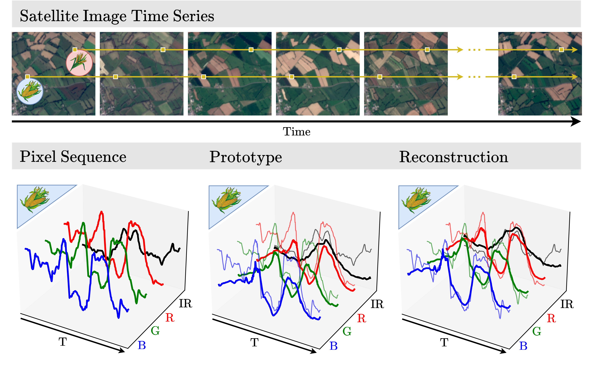

Pixel-wise Agricultural Image Time Series Classification: Comparisons and a Deformable Prototype-based Approach
Elliot Vincent1,2
Jean Ponce3,4
Mathieu Aubry1
1Abstract
Improvements in Earth observation by satellites allow for imagery of ever higher temporal and spatial resolution. Leveraging this data for agricultural monitoring is key for addressing environmental and economic challenges. Current methods for crop segmentation using temporal data either rely on annotated data or are heavily engineered to compensate the lack of supervision. In this paper, we present and compare datasets and methods for both supervised and unsupervised pixel-wise segmentation of satellite image time series (SITS). We also introduce an approach to add invariance to spectral deformations and temporal shifts to classical prototype-based methods such as K-means and Nearest Centroid Classifier (NCC). We show this simple and highly interpretable method leads to meaningful results in both the supervised and unsupervised settings and significantly improves the state of the art for unsupervised classification of agricultural time series on four recent SITS datasets.
Proposed method
1. A prototype-based method

Overview. Given an agricultural satellite image time series, we assign to each pixel independently the label of the prototype which leads to the best reconstruction. Each prototype follows spectral and temporal deformations in order to match a given input time series.
2. Introducing spectral and temporal invariances
Learned transformations. We show the visual interpretations of our time series deformations. The offset deformation is time-independent and performed on each spectral band separately. On the other hand, time warping is channel-independent and achieved by translating landmark time-steps, allowing targeted temporal adjustments.
BibTeX
If you find this work useful for your research, please cite:
@misc{
vincent2023pixelwise,
title={Pixel-wise Agricultural Image Time Series Classification: Comparisons and a Deformable Prototype-based Approach},
author={Elliot Vincent and Jean Ponce and Mathieu Aubry},
year={2023},
eprint={2303.12533},
archivePrefix={arXiv},
primaryClass={cs.CV}
}
Further information
If you like this project, check out related works from our group:
- Loiseau et al. - Learnable Earth Parser: Discovering 3D Prototypes in Aerial Scans (CVPR 2024)
- Loiseau et al. - Representing Shape Collections with Alignment-Aware Linear Models (3DV 2021)
- Monnier et al. - Unsupervised Layered Image Decomposition into Object Prototypes (ICCV 2021)
- Monnier et al. - Deep Transformation-Invariant Clustering (NeurIPS 2020)
Acknowledgements
The work of MA was partly supported by the European Research Council (ERC project DISCOVER, number 101076028). JP was supported in part by the Louis Vuitton/ENS chair on artificial intelligence and the French government under management of Agence Nationale de la Recherche as part of the Investissements d'avenir program, reference ANR19-P3IA0001 (PRAIRIE 3IA Institute). This work was granted access to the HPC resources of IDRIS under the allocation 2021-AD011013067 made by GENCI. We thank Antoine Guedon for inspiring discussions; Tom Monnier, Romain Loiseau, Ricardo Garcia Pinel, Theo Bodrito, Yannis Siglidis and Loic Landrieu for manuscript feedback and constructive insights.